Betrayal
| Betrayal at Krondor - Chapter 6 Betrayal |
|
|
||
|
Gorath & Owyn must find the Book of Macros | ||||
|
[HOME]
| ||||
| 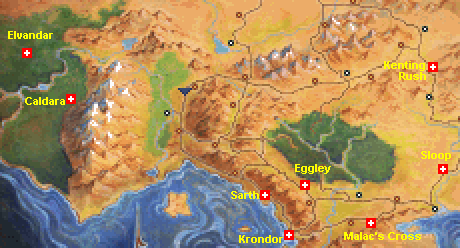 |
This Chapter is probably the richest one in the Game, crammed with
Quests and sub-Quests, many of which are optional. The below Walkthrough
will describe all the possibilities. If you decide to skip some or all of
the optional Quests, you will also miss a lot of the story, and possibly
a lot of interesting Items, useful in later Chapters. |
| WALKTHROUGH Chapter 6 |
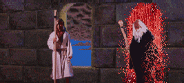 |
A BUG in Version 1.01 will allow you to Teleport to the Temples of Tith and Dala, and
thus enter Zone 5. The various resulting glitches are worth exploring.
The below Walkthrough is quite complex. Click any of the Six Basic Headings
below, if you want to JUMP to a section.
To tell the truth, the Lower Level does not contain anything of extreme importance, although
you can pick up some nice items here. There are five more Combats to be fought, consisting of
various combinations of Rogues, Rogue Mages, and Quegian Pirates. There are no more Trapped
Chests to look out for, but a few Locked and Ordinary ones, and a handful of Dead Bodies. It
is recommended that you pick up some of the stuff found here. At least then you'll have something
to sell in the Krondor Shops.
When you're done with this level, return to the Upper Level and meet Kat again. If you give
her the Idol, she will reward you with information indicating that you should go to Malac's
Cross, and talk to Abbot Graves again. This will trigger an optional side-Quest, by no means
necessary for finishing the Chapter, but interesting nevertheless. If you want to skip it,
you may just as well decide to hold on to the Idol. It can be used 8 times to kill any Enemy
instantly, but beware: it will subtract 20 points from the Skills of the Character holding it!
TIP! If you don't mind a bit of cheating, you can use the CHEAT CHEST to store the Idol, thus
keeping your Skills intact. You can then retrieve it whenever you want. Just remember to take
it back, before the Chapter ends - otherwise it will be lost to you!
NOTE: The game can easily be finished without performing the Abbot's Quest, and the Alcohol
Quest (in Kenting Rush). If you'd rather skip these two Quests, you'd be better off heading
towards Eggley (and Sarth). Skip to the SARTH SECTION.
On the way to Sloop you won't meet any NEW enemies until you exit the Lyton Area, go North,
and pass the TWO INNS. Before you do so, you should re-visit the Aal Oracle. If you didn't
kill them in Chapter 3, here you will run into two Pantathians [Combat 31].
You may also want to visit the Temple of Lims-Kragma, in order to get a Blessing for Gorath's recently
acquired Sword of Lims-Kragma. And, if you never made it through the ARMY of Shades guarding Sethanon
in the earlier Chapters,
On the Road North towards Sloop, you will probably encounter three Enemy groups, if you stick
to the Road: Two Rogues and two Quegian Pirates [Combat 35],
another two Rogues and two Quegian Pirates [Combat 36],
and three Rogues and two Quegian Pirates [Combat 36]. All these
can be avoided by staying close to the mountains.
If you now head North towards Kenting Rush, you may run into some Enemies carried over from
earlier Chapters, but if you stick to the Road, you will only meet two new Enemy groups, three
Moredhel Warriors and two Beasthounds [Combat 15], and
four Moredhel Warriors and one Beasthound [Combat 16], just South
of Cavall Keep. If you now enter Cavall Keep, and visit Count Corvalis' House, you will be told
that he has fled to Kenting Rush.
You will find three Rogues hanging out near the Kenting Rush Well
[Combat 17]. A western path will lead to the Dagger 'n Star Tavern.
Now locate Lady Boswich's secret valley to the East. You might run into four Rogues
[Combat 19] on the way there, but when
you've penetrated Patrus' illusory mountain, you won't be able to approach
the Alcohol Chests without triggering a Trap with two Trolls [Combat 04].
This Combat/Trap is much simpler than it looks. The Trolls can't move, so Owyn can easily kill
them by casting INVITATION. Then navigate the Trap: The Near Solid and Transparent Crystals are
obviously useless. Ignore them. The Red Pole current can NOT be deactivated. Push the FAR
Transparent Crystal in front of the Right Blaster in order to get rid of the Green Pole Current.
Then push the Far Solid Crystal in front of the Left Blaster. Done.
Don't get greedy! You only need one of the Ale Casks in order to complete the Quest. Give it to
Lurough, and he will reward you with a Sword of Lims-Kragma [83]. Gorath probably already has one,
but he can always sell it in a Shop of his own choice, or (perhaps better) leave it in a Moredhel
Chest in Dimwood, for James and Locklear to find in Chapter 7 (see below).
Whichever way you choose to leave this area, make sure you visit the Temple of Kahooli first.
Note that you can't exit into Zone 5 (Northwarden). A group of six Rogues
[Combat 18] is guarding the pass. They can be fought, but the Combat
is endless. (Good practice, though.)
Please remember that you have now been performing various sub-Quests,
which are not necessary in order to finish this Chapter. You have been told so before,
but if you now want to change your mind, here are three basic choices at this stage:
MEDIUM HURRY. Teleport back to the Shrine of Istalon in KRONDOR, and start
the Eggley/Sarth sub-Quest (see below).
BIG HURRY. You really shouldn't be here, so TELEPORT to the Temple of
Killian, and go straight to the MAC MORDAIN CADAL (see below).
You will run into some new Combats with Moredhel Warriors and Rogues. The Rogues can be a pain,
because they're Immune to Owyn's EVIL SEEK. South of Tanneurs you'll have to fight five Moredhel
[Combat 38], and six Rogues [Combat 39].
North of Tanneurs four Moredhel are waiting [Combat 40], and South
of Eggley you will meet four Rogues [Combat 41].
Your next destination is Sarth, either via the pass between Eggley and Questor's View (many Combats), or
by returning to Krondor, and taking the road North towards the Temple of Sung (few Combats):
LAMUT AREA
YABON AREA
TYR-SOG AREA
LORIEL AREA
HAWK'S HOLLOW AREA
KILLIAN AREA
Surely you've already fought all Combats and emptied all Caches here. If you
haven't, seek out the Brak Nurr - you must kill it in order to enter the Lower
Level.
If you've been here in Chapters 2 and 3, you will have noted the Barriers keeping you away
from the Western Section of this Area. In this Chapter the Barriers have gone - you can go
all the way to the Western Exit.
On the way out, don't overlook a North Chamber, containing three Chests. The Chests are guarded
by three Trolls [Combat 04]. A Locked Chest here contains the very scarce
TOUCH OF LIMS-KRAGMA Scroll, extremely useful to Owyn. Lockpicking Skill of 63 (Version 1.02) or
67 (Version 1.01) is needed to open this Chest. One or two Amulets of the Upright Man will help.
After exploring the Lower Level of the Mac Mordain Cadal, locate the Western exit, kill
the second Brak Nurr [Combat 05], and embark on the final stage of this Chapter.
There are two Roads to Elvandar:
THE NORTHERN PATH. Follow the Main Road to the Eastern Bridge. Cross the Bridge, and
stay on the Main Road. This path is extremely difficult, although quite possible.
It is not recommended, unless you've first performed Eliaem's Quest, and entered the
Ancient Valheru Ruins, in order to get the Guarda Revanche, which is the
most powerful Sword in the game. The areas North of the river are particularly rich
in Combats, but an exploration of these areas will be very rewarding.
THE SOUTHERN PATH. After Caldara leave the Main Road before it turns North towards the
Bridge, and take the South Trail towards the Western Bridge. Meet Eliaem and complete
her Quest. After crossing the Western Bridge,
leave the road, go West along the river's bank until you reach the mountains.
Then go North, travelling as close to the mountains as possible, in order to
avoid the Sleeping Glades. Enter the Ancient Valheru Ruins, find the Guarda Revanche, and
exit to Elvandar through the Northern Exit of the Ruins. Before you enter Elvandar in this
way, you should seriously consider exploring the areas North of the river first.
Now locate Prince Calin. North of Caldara there is a narrow valley, which penetrates
the Eastern mountains. You can reach it by following the Main Road towards the Eastern
Bridge, and then taking the East Trail. If you want to avoid Combats, keep off the Road and
go North, staying as close as you can to the Eastern edge of the mountains.
In the Caldara Area look out for:
[COMBAT 02]: Two Grandsire Wyverns, North of Caldara. Don't miss four Tree Stumps and two
Locked Chests nearby.
If you take the Main Road all the way to the Eastern Bridge, you'll have to fight a Moredhel Spellcaster,
a Bulldrake Wyvern, and a Grandsire Wyvern [Combat 08], and deal with
a simple, but easily bungled TRAP:
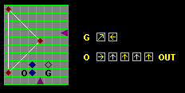
This solution involves both Characters.
Owyn can solve this Trap on his own, Can you see how?
If you want to cross the Eastern Bridge NOW, and explore the area
north of the River, this area will be briefly treated near the bottom
of this page.
Farther along the East Trail, you will encounter an extremely devious Trap:
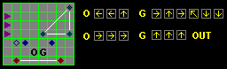
This solution may, perhaps, be simplified.
At the end of the Trail, two Moredhel Warriors and two Witch Hags are waiting
[Combat 12].
Calin's Valley lies to the East. Entering, you will have to deal with a Trap
including a Moredhel Spellcaster and two Grandsire Wyverns
[Combat 23]:
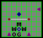
Thanks to Larry Paff, here's the best solution to date:
Owyn pushes the Transparent Crystal diagonally as soon as
he can. This move places him next to the Spellcaster, who now can't cast
any Spells. Gorath concentrates on killing the two Wyverns (who can
be be distracted by summoning Beasthounds or Rusalki). The Trap will
be navigated easily, as soon as the Enemies are gone.
TIP: Before you meet Calin, make sure that Gorath's Crossbow Skill and Owyn's Stealth
Skill are the ONLY SELECTED SKILLS!
Go back to where the South Trail branches from the Main Road West of Caldara. Take the
South Trail.
The game is seriously bugged at his stage. Details will be found in the MAP WEB (South
Trail Map, see above). If you just want to avoid the BUGS, without knowing how they affect
the game, here's how:
If you're playing Version 1.01, make sure that Gorath and Owyn have THREE empty slots in
their combined Inventories, before they give Eliaem her Heart. If they don't, first place some
Items in a BAG.
If you're playing Version 1.02, make sure that Gorath and Owyn have THIRTEEN empty slots in
their combined Inventories, before they give Eliaem her Heart. If they don't, first place some
Items in a BAG.
When you've crossed the Bridge, turn left, and follow the river bank until you
reach the mountains. Now go North, staying as close to the Mountains as possible.
If you stray to far to the East (right), you will enter the Sleeping Glades.
NOTE!
The Northern exit of the Ruins will lead you directly to Elvandar, and
this Chapter will finish. If you still want to explore the area some more,
DO NOT exit this way, at least not now.
Exploring the areas North of the River is not necessary in order to finish
Chapter 6. The Combats here are pretty heavy, but the rewards are substantial.
Some of the Combats can surely be avoided, if you study the Maps carefully.
CROSS THE EASTERN BRIDGE. Two Grandsire Wyverns are waiting North of the Bridge
[Combat 09]. The Main Road leads to Elvandar and the Western
Bridge. Don't go there now, but leave the Road, go North and aim for the extreme
North-Eastern corner of the area. This will probably involve you in some heavy fights
with three Bulldrake Wyverns [Combat 13], four Grandsire Wyverns
[Combat 14], and four Bulldrake Wyverns [Combat 20].
As you near journey's end you will spot two Tents near the river bank. Here you will be attacked
by three Moredhel Warriors and a Witch Hag [Combat 19]. This Combat
is definitely worth your while - the Witch Hag is holding the only available copy of the
FIRESTORM Scroll! In the Webmaster's opinion, this is the most valuable SPELL in the game.
Don't leave the area without locating the nearby STARS, RAIN, and SADDLE Chests. Now go back
towards the Eastern Bridge.
GO TOWARDS WESTERN BRIDGE. North of the Eastern Bridge, follow the Main Road,
leading towards the Western Bridge and, ultimately, Elvandar. Fight two Grandsire Wyverns
and one Bulldrake Wyvern [Combat 10]. If you go directly South
from this Combat site, you will find two Locked Chests by the river. Back on the Road, continue
West. Soon you'll reach a fork in the Road. The Main Road leads on to the West and North, but
a Southern Path leads towards the Western Bridge. Here you will meet an interesting group of
Enemies: two Bulldrakes, one Grandsire, and a Witch Hag [Combat 11].
The path forks - South towards the Bridge, and West towards the Sleeping Glades, which you
should stay away from.
NOTE ON SLEEPING GLADES. If you enter this area, you will fall asleep every time you take a
step. Rations will be consumed at an alarming rate! The mechanics here are not easy to establish,
but it seemingly each LARGE STEP takes approximately 31 hours.
This means that one, and sometimes two, Rations will be consumed per step.
GO TOWARDS ELVANDAR. If you approach Elvandar by the Main Road, and veer West, the
Sleeping Glades will get you! Your Spyglass (or Eyes of Ishap Spell) may indicate some
potential objects of value, but they're hardly worth the trouble.
Soon after the Main Road turns North, you will encounter two Bulldrakes and one Grandsire
Gorath pushes the left Transparent Crystal forth, thus getting rid of the Green Pole Current.
Next he pushes the right Transparent Crystal into a position to trigger the right Blaster, in order to get rid of the
Red Pole Current. Owyn finally pushes the Solid Crystal forth, clogging the Left Blaster. Owyn can now
comfortably exit the Trap, since the Red Right Pole shields him from the Right Blaster.
Near a Trail leading to the East (the North Trail) you will have to fight four Bulldrakes
[Combat 17]. When the Combat is over, follow the North Trail. You'll
meet two Bulldrakes [Combat 15]. Nearby you'll find the Dragontail Well,
where you can boost your Characters' Strength. In version 1.01 this is TRICKY, and in version 1.02
the Well is BUGGED! Consult the MAP WEB (see map above) for details.
If you want to follow the North Trail any farther, you will have to fight three Bulldrakes
[Combat 21]. Return to the Main Road and continue North.
The Chapter will be over as soon as you enter ELVANDAR. You will meet Tomas, who will give
you the BOOK OF MACROS, which will transport you to a new world, Timirianya, where you will
find PUG, release him from his prison, and save his daughter GAMINA.
Here is the recommended procedure for finishing Chapter 6:
The Chapter can be finished without performing all of the above. Most of the Quests
are unnecessary, although recommended.
KAT'S QUEST will tempt you to re-visit Abbot
Graves in Malac's Cross. The ABBOT'S QUEST will lead you to Sloop, where you will meet
Mitchel Waylander again.
The ALCOHOL QUEST is totally unnecessary, but allows you to meet
Count Corvalis and his daughter Ugyne again, in totally new circumstances.
In this Chapter Zones 1, 2, 3, and 4 can be freely travelled, although
Zone 5 will be inaccessible. The Combats in these Zones will mainly be completely new,
and unique to this Chapter. Extremely few Combats will have carried over from Chapters
1 - 3.
No Combats will
be encountered. Highcastle and Northwarden won't exist.
This Bug can be utilized - see
TIPS AND TRICKS page.

 Gorath and Owyn will start their journey in the Sewers below Krondor (Upper Level).
This level is familiar from Chapters 1 and 2. No new Combats will be found here in
this Chapter, but some may have been left unfought in Chapters 1 and 2. Limm will
be found in his usual place, and will offer you some new information, and sell you
some odds and ends for 100 Gold, among them the Crawler's Spynote,
which mentions the Idol of Lassur.
Gorath and Owyn will start their journey in the Sewers below Krondor (Upper Level).
This level is familiar from Chapters 1 and 2. No new Combats will be found here in
this Chapter, but some may have been left unfought in Chapters 1 and 2. Limm will
be found in his usual place, and will offer you some new information, and sell you
some odds and ends for 100 Gold, among them the Crawler's Spynote,
which mentions the Idol of Lassur. Locate Kat in the southeast corner of this level. She will ask you to find the Idol of
Lassur. Kat may be trusted, as she is actually plotting to kill the Crawler.
Locate Kat in the southeast corner of this level. She will ask you to find the Idol of
Lassur. Kat may be trusted, as she is actually plotting to kill the Crawler.
 Now find the recently opened entrance to the Lower Level. Immediately you will run into
two Rogues and one Rogue Mage [Combat 05]. The Chest they're
guarding is Trapped. Gorath's Lockpicking Skill has surely reached 20 by now, so he will
easily deactivate it.
Now find the recently opened entrance to the Lower Level. Immediately you will run into
two Rogues and one Rogue Mage [Combat 05]. The Chest they're
guarding is Trapped. Gorath's Lockpicking Skill has surely reached 20 by now, so he will
easily deactivate it.
 The Chest contains the Idol of Lassur and the magnificent Sword of Lims-Kragma. You can
now explore the Lower Level of the Sewer, if you feel up to it.
The Chest contains the Idol of Lassur and the magnificent Sword of Lims-Kragma. You can
now explore the Lower Level of the Sewer, if you feel up to it. Exit the Sewers, go to the Krondor
Tavern and talk to Nivek. His information should direct you out of Krondor, to the crossroads
just North of the city. The Body holds Nivek's key.
Exit the Sewers, go to the Krondor
Tavern and talk to Nivek. His information should direct you out of Krondor, to the crossroads
just North of the city. The Body holds Nivek's key. Re-enter Krondor and talk to Nivek again: He will direct you towards Eggley, where the key will
prove useful. Of course you can go dircectly there, but why not take Kat's advice and seek out
Abbot Graves first?
Re-enter Krondor and talk to Nivek again: He will direct you towards Eggley, where the key will
prove useful. Of course you can go dircectly there, but why not take Kat's advice and seek out
Abbot Graves first?

 Go East towards Darkmoor and Malac's Cross. Soon you will run into Gran Petrumh, who has now
fled Malac's Cross, and is on her way to her friend Ulam's house in Darkmoor.
She will ask you to recover her Ale Cask from Ivan at the Queen's Row Tavern.
If you perform this micro-Quest, Petrumh will reward you with some Picklocks, and no less
than 16 charges of Fadamor's Formula!
Go East towards Darkmoor and Malac's Cross. Soon you will run into Gran Petrumh, who has now
fled Malac's Cross, and is on her way to her friend Ulam's house in Darkmoor.
She will ask you to recover her Ale Cask from Ivan at the Queen's Row Tavern.
If you perform this micro-Quest, Petrumh will reward you with some Picklocks, and no less
than 16 charges of Fadamor's Formula! Malac's Cross is heavily guarded by Pantathians. You will encounter three groups of the
Serpent Men. The first group of two
[Combat 32], and the second group of three
[Combat 33] shouldn't be too hard to handle, but the third group of
FIVE Pantathians [Combat 34] is serious business! Save before and
after each encounter and carefully use ALL your resources (Naphtha, Infinity Pool, Restoratives,
EVIL SEEK, SKIN OF THE DRAGON, FETTERS OF RIME, etc.)
Malac's Cross is heavily guarded by Pantathians. You will encounter three groups of the
Serpent Men. The first group of two
[Combat 32], and the second group of three
[Combat 33] shouldn't be too hard to handle, but the third group of
FIVE Pantathians [Combat 34] is serious business! Save before and
after each encounter and carefully use ALL your resources (Naphtha, Infinity Pool, Restoratives,
EVIL SEEK, SKIN OF THE DRAGON, FETTERS OF RIME, etc.) Once in Malac's Cross, go to the Chapel, talk to Abbot Graves and learn of his predicament.
The Abbot is in serious trouble. In order to help him you will have
to visit Mitchel Waylander in Sloop. Note that the Chapel's TELEPORT function is unavailable now, and
will be until you've performed the Abbot's Quest. Before leaving Malac's Cross, why not pop into
the Tavern, and get Petrumh's Ale Cask from Ivan?
Once in Malac's Cross, go to the Chapel, talk to Abbot Graves and learn of his predicament.
The Abbot is in serious trouble. In order to help him you will have
to visit Mitchel Waylander in Sloop. Note that the Chapel's TELEPORT function is unavailable now, and
will be until you've performed the Abbot's Quest. Before leaving Malac's Cross, why not pop into
the Tavern, and get Petrumh's Ale Cask from Ivan?

 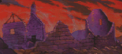
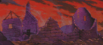 LYTON AREA
LYTON AREA
 SILDEN AREA
SILDEN AREA
GO THERE NOW! The Shades will be gone, you can easily access the Sethanon
caches, and get new Spells for Owyn (DRAGON'S BREATH, DANNON'S DELUSIONS and GRIEF OF 1000 NIGHTS). MAP OF SLOOP AREA
MAP OF SLOOP AREA
 Enter Sloop, and locate Mitchel Waylander's house. He will offer some new information, and
give you the NOTE Abbot Graves is waiting for. Of course, you can now go back South to Malac's
Cross, finish the Abbot's Quest, and avail yourself of the Chapel's TELEPORT function to go wherever
you want. But if you're not in a hurry, why not go to Romney? Or all the way to Kenting Rush?
Enter Sloop, and locate Mitchel Waylander's house. He will offer some new information, and
give you the NOTE Abbot Graves is waiting for. Of course, you can now go back South to Malac's
Cross, finish the Abbot's Quest, and avail yourself of the Chapel's TELEPORT function to go wherever
you want. But if you're not in a hurry, why not go to Romney? Or all the way to Kenting Rush? On the Road from Sloop to Romney three Rogues and a Rogue Mage may be encountered
[Combat 38]. In Romney, make sure you visit the Black Sheep
Tavern, in order to talk to Jason for one last time. Unfortunately the game doesn't
offer a Quest for making the poor boy's life any easier.
On the Road from Sloop to Romney three Rogues and a Rogue Mage may be encountered
[Combat 38]. In Romney, make sure you visit the Black Sheep
Tavern, in order to talk to Jason for one last time. Unfortunately the game doesn't
offer a Quest for making the poor boy's life any easier. CAVALL RUN AREA
CAVALL RUN AREA
 CAVALL KEEP AREA
CAVALL KEEP AREA

 Talk to Lurough in order to trigger the Alcohol Quest. Near the Road leading to the Temple of
Kahooli you will meet Ugyne Corvalis again. She will tell you about Lady Boswich. Locate Lady
Boswich's Barn. You'll need 50 Gold Sovereigns in order to bribe her Guards. Note that Count
Corvalis is staying with the Lady, but this time he's not as bossy as before. The Lady Boswich
will tell you how she keeps her booze hidden away, with a little help from a magician named
Patrus!
Talk to Lurough in order to trigger the Alcohol Quest. Near the Road leading to the Temple of
Kahooli you will meet Ugyne Corvalis again. She will tell you about Lady Boswich. Locate Lady
Boswich's Barn. You'll need 50 Gold Sovereigns in order to bribe her Guards. Note that Count
Corvalis is staying with the Lady, but this time he's not as bossy as before. The Lady Boswich
will tell you how she keeps her booze hidden away, with a little help from a magician named
Patrus!

 MAP OF EGGLEY AREA
MAP OF EGGLEY AREA In Eggley, the house which looks like a shop is Stellan's office. You can open it with Nivek's
Key and find a Map to the mines under Sarth.
In Eggley, the house which looks like a shop is Stellan's office. You can open it with Nivek's
Key and find a Map to the mines under Sarth. MAP OF TEMPLE OF SILBAN AREA
MAP OF TEMPLE OF SILBAN AREA MAP OF SUNG AREA
MAP OF SUNG AREA
 MAP OF SARTH AREA
MAP OF SARTH AREA
 Talk to Brother Marc in order to learn that Sarth can't be entered in the normal way. You
can only enter via the Mines, and this you can only do if you're holding the Map found in
Stellan's Eggley office. You've probably visited the Mines before, but if you haven't, make
sure you pick up the suit of Grey Plate Armor from the TRADE MARES Chest. It may be useful
later, unless you've already solved the Kobolds' Quest.
Talk to Brother Marc in order to learn that Sarth can't be entered in the normal way. You
can only enter via the Mines, and this you can only do if you're holding the Map found in
Stellan's Eggley office. You've probably visited the Mines before, but if you haven't, make
sure you pick up the suit of Grey Plate Armor from the TRADE MARES Chest. It may be useful
later, unless you've already solved the Kobolds' Quest.

 When you enter the Sarth Library, you will be rewarded with three Emeralds and a copy of
Dorcas' Treatise. You will now be able to read a SPECIAL BOOK, indicating that you will
need to go to Elvandar, and talk to Tomas, in order to find the Book of Macros.
When you enter the Sarth Library, you will be rewarded with three Emeralds and a copy of
Dorcas' Treatise. You will now be able to read a SPECIAL BOOK, indicating that you will
need to go to Elvandar, and talk to Tomas, in order to find the Book of Macros.

 AREA NORTH OF QUESTOR'S VIEW
AREA NORTH OF QUESTOR'S VIEW
Before you enter the MAC and head towards the final stage of this Chapter, you
should note that in this Chapter there are quite a few extra Combats available
in Zone 1, apart from Combat 35, mentioned above.
Combat 34 - 5 Beasthounds
Combat 42 - 5 Beasthounds
Combat 41 - 2 Moredhel Spellcasters + 3 Shades (INTERESTING!)
Combat 40 - 4 Moredhel Warriors + 1 Moredhel Spellcaster
Combat 39 - 5 Moredhel Warriors
Combat 38 - 2 Moredhel Warriors + 1 Rogue Mage + 2 Beasthounds
Combat 37 - 4 Moredhel Warriors + 1 Moredhel Spellcaster
Combat 36 - 3 Moredhel Warriors + 2 Beasthounds

 In the East Section three Rogues [Combat 02] can only be fought in
Chapter 6. You may already have performed the Kobolds' Quest, but if you haven't, you'll be
grateful for the GREY PLATE ARMOR you picked up in the Sarth Mines.
In the East Section three Rogues [Combat 02] can only be fought in
Chapter 6. You may already have performed the Kobolds' Quest, but if you haven't, you'll be
grateful for the GREY PLATE ARMOR you picked up in the Sarth Mines.

 THE BULLDRAKE WYVERN
THE BULLDRAKE WYVERN
is immune to
FLAMECAST,
but will suffer Double Damage
and Double Freeze Duration
from FETTERS OF RIME. THE GRANDSIRE WYVERN
THE GRANDSIRE WYVERN
is immune to
FETTERS OF RIME Damage (Freeze Duration normal),
but will suffer
Double Damage
from FLAMECAST and FIRESTORM.
[COMBAT 03]: Three Grandsire Wyverns, Main Road near East Trail Fork. The nearby TRAP is
extremely simple.
[COMBAT 07]: Three Moredhel Warriors and a Spellcaster, East Trail.
[COMBAT 06]: Three Moredhel Warriors and two Witch Hags, East Trail.
without any help from Gorath.
If you know how, please inform the Webmaster.
 Prince Calin will impart LOTS of imformation, give you a KEY OF LINEAGES, and the THY
MASTER'S WILL Scroll. He will also offer to improve Gorath's Crossbow Skill and Owyn's
Stealth, free of charge. Before you leave Calin's Valley, visit Delcinad's Shop. Exiting
the Valley, you may also want to explore the area, before you go South. You'll find the
SPONGE Chest, and four Tents (one of which is TRAPPED!).
Prince Calin will impart LOTS of imformation, give you a KEY OF LINEAGES, and the THY
MASTER'S WILL Scroll. He will also offer to improve Gorath's Crossbow Skill and Owyn's
Stealth, free of charge. Before you leave Calin's Valley, visit Delcinad's Shop. Exiting
the Valley, you may also want to explore the area, before you go South. You'll find the
SPONGE Chest, and four Tents (one of which is TRAPPED!).
 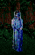
You'll meet two Grandsire Wyverns here [Combat 01]. If you now
go directly NORTH from the Combat site, you will find ELIAEM near the river bank. She
will hand out a Quest: Recover an Eliaem's Heart stolen by a Spellcaster. If you already
have a Heart, you can solve this Quest NOW. If not, find the Spellcaster (and four Rusalki)
West of the Western Bridge [Combat 05]. You'll find an Eliaem's
Heart, if you search the Spellcaster's Body. Revisit Eliaem. In exchange for the recovered
Heart, you will be rewarded with Rations [168] and Eliaem's Shell.
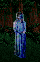
You'll meet two Grandsire Wyverns here [Combat 01]. If you now
go directly NORTH from the Combat site, you will find ELIAEM near the river bank. She
will hand out a Quest: Recover an Eliaem's Heart stolen by a Spellcaster. If you already
have a Heart, you can solve this Quest NOW. If not, find the Spellcaster (and four Rusalki)
West of the Western Bridge [Combat 05]. You'll find an Eliaem's
Heart, if you search the Spellcaster's Body. Revisit Eliaem. In exchange for the recovered
Heart, you will be rewarded with Rations [168] and Eliaem's Shell. You will soon reach the entrance of the Ancient Valheru Ruins. It is guarded by two
Bulldrake Wyvern's, one of them pregnant [Combat 18].
The Ruins can not be entered unless you've talked to Prince Calin, and received a Key
of Lineages from him. Even if you already have such a Key, it is of no use unless you've
talked to Calin, and 2 points will be subtracted from your Strength every time you try entering.
If, however, you HAVE talked to the Prince, 6 points will be added to your Strength
when you enter.
You will soon reach the entrance of the Ancient Valheru Ruins. It is guarded by two
Bulldrake Wyvern's, one of them pregnant [Combat 18].
The Ruins can not be entered unless you've talked to Prince Calin, and received a Key
of Lineages from him. Even if you already have such a Key, it is of no use unless you've
talked to Calin, and 2 points will be subtracted from your Strength every time you try entering.
If, however, you HAVE talked to the Prince, 6 points will be added to your Strength
when you enter. You can fight 5 groups of two Shades here [Combats 01 - 05].
A Trapped Chest (Skill > 55) contains 1600 Gold Sovereigns! Keep in mind that Gorath and
Owyn will have no use for money after this Chapter is finished. There are two Locked Rooms
here. The South Room (Guilder's Passkey) contains the LIFE and EQUALS Chests. Among the
treasures they will yield are a hoard of various Quarrels, the scarce Sarigsbane and Roric's
Seal, the MAD GOD'S RAGE Scroll, and the MIRRORWALL Scroll (version 1.02 only).
You can fight 5 groups of two Shades here [Combats 01 - 05].
A Trapped Chest (Skill > 55) contains 1600 Gold Sovereigns! Keep in mind that Gorath and
Owyn will have no use for money after this Chapter is finished. There are two Locked Rooms
here. The South Room (Guilder's Passkey) contains the LIFE and EQUALS Chests. Among the
treasures they will yield are a hoard of various Quarrels, the scarce Sarigsbane and Roric's
Seal, the MAD GOD'S RAGE Scroll, and the MIRRORWALL Scroll (version 1.02 only).
 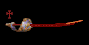
In the North
Room (Key of Lineages) you will find the GLAMREDHEL Chest. This is particularly rich in treasures, the most
important of which is the "Exotic Sword", which is the Hilt of the Guarda Revanche. Use Eliaem's
Shell to repair this, and you will have gained the most powerful Sword in the game. The Guarda
carries a #3 Blessing in version 1.01, none in version 1.02 - and it is bugged. Please refer to
MAP WEB for details (see above map).
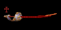
In the North
Room (Key of Lineages) you will find the GLAMREDHEL Chest. This is particularly rich in treasures, the most
important of which is the "Exotic Sword", which is the Hilt of the Guarda Revanche. Use Eliaem's
Shell to repair this, and you will have gained the most powerful Sword in the game. The Guarda
carries a #3 Blessing in version 1.01, none in version 1.02 - and it is bugged. Please refer to
MAP WEB for details (see above map).
[Combat 16], and a Trap. The Trap is fairly simple: Before you reach Elvandar, you'll have too face FIVE Bulldrakes [Combat 22].
Remember that entering Elvandar is equivalent to finishing the Chapter. If you intend to do this
now, please note that a Trapped Chest in the Sleeping Glades, directly West of Elvandar, contains a
BESSY MAULER. If you have sufficient Rations, you can reach this Chest. The Trap will be easily
deactivated, if you remember to cast SCENT OF SARIG first.
Before you reach Elvandar, you'll have too face FIVE Bulldrakes [Combat 22].
Remember that entering Elvandar is equivalent to finishing the Chapter. If you intend to do this
now, please note that a Trapped Chest in the Sleeping Glades, directly West of Elvandar, contains a
BESSY MAULER. If you have sufficient Rations, you can reach this Chest. The Trap will be easily
deactivated, if you remember to cast SCENT OF SARIG first. and
and 
will return in Chapter 8. [TOP OF PAGE]
[TOP OF PAGE]
 [NEXT]
[NEXT]